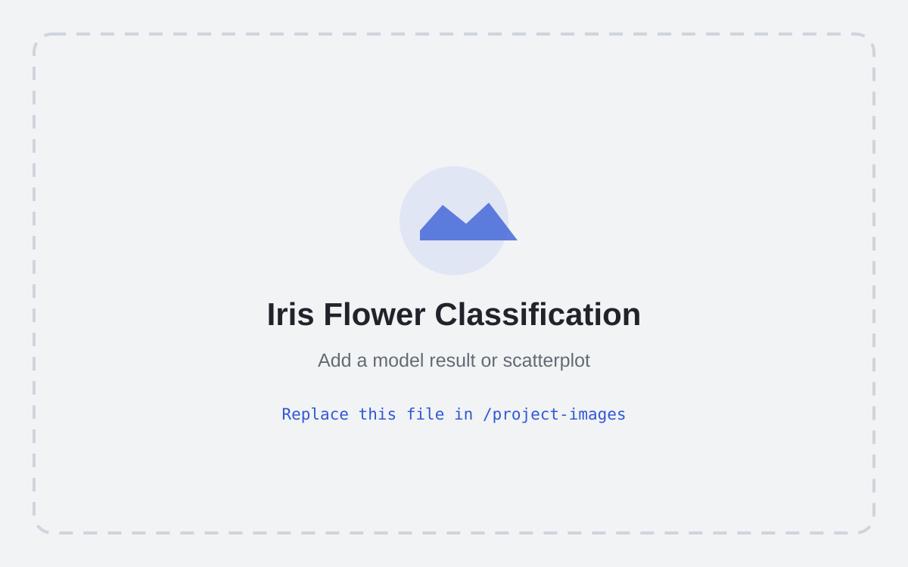

Machine Learning · Classification
Iris Flower Classification
A supervised learning project using sepal and petal measurements to classify three Iris flower species.

Replace this placeholder image in the project-images folder with your own chart or project screenshot.
Problem
Determine whether physical flower measurements can be used to distinguish Iris species.
Process
The workflow removes the identifier column, checks the data, visualizes feature relationships, creates a train/test split, trains a classifier, and evaluates predictions.
Results and interpretation
The project demonstrates how exploratory plots can reveal feature separation before model training. Add your final accuracy and model comparison here after confirming the exact output from your repository.
Limitations
The dataset is small and well-structured, so performance may not reflect the difficulty of noisier real-world classification problems.